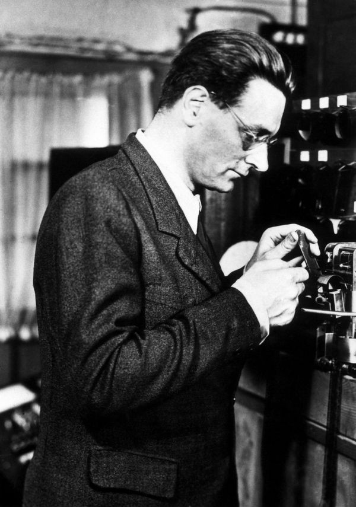

After graduating, Konrad Zuse went to work for the Henschel Aircraft Company in Berlin. His job required many routine calculations by hand, leading him to think of better and more effective ways of completing such equations. He considered a machine that would help with calculations, and this would lead to the construction of the Z1.
After quitting his job in 1935, Zuse began to experiment with the construction of the Z1 in his parents' apartment. His first attempt was produced in 1936 which resulted in a floating-point binary mechanical calculator. The Z1 had little programmability and read instructions from perforated 35 mm film.
He completed the construction of the Z1 in 1938. Unfortunately, the Z1 which contained around 30,000 metal parts, never worked due to insufficient mechanical precision. The end of the Z1 was on the 30th of January 1944 following the British air raids in the Second World War when his parents' apartment and neighbouring buildings were destroyed. Both the Z1 and its original blueprints were destroyed.
After being called to military service in 1939, Zuse was given the resources to construct the Z2, a digital computer which shared similar mechanical memory to the Z1. The Z2 used telephone relays and punch cards as storage. It was destroyed along with the blueprints and the Z1.
With plans from 1938 and funding from the German government, Konrad Zuse began working on the Z3 in 1941, improving on the basic Z2 machine. More information on the Z3 is available in Significance.
The Z4 was the final development of the Z3. Being very similar to the Z3, the Z4 used 32-bit floating point words. The Z4 was shipped off to Göttingen from Berlin to prevent it from falling into Soviet hands during the war.